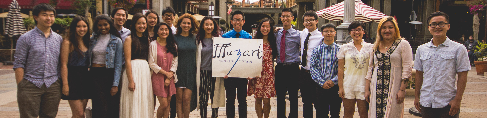

Muzart: Music for Motion
Muzart plays music in public places, such as farmers markets and shopping centers, to raise money for schools lacking sufficient funding for their music programs. We’ve raised over $3200 total, and donated over $410 worth of instruments to Zhaojue Minority School in China and a $1500 check to the Alum Rock School District band program in the Bay Area. Learn more at www.musicmuzart.org!


Evergreen Engineering and Computer Science Society
The EECS Society teaches Python programming and the building of small electronics, such as portable phone chargers, to middle and high schoolers. To promote interest in the multitude of engineering disciplines, we also invite speakers from Stanford, Google, and top Bay Area companies to talk about their experiences. Learn more at eecss.github.io!
Evergreen Chess
Evergreen Chess teaches students of all ages and levels how to play the game of chess. We organized a free official USCF rated chess tournament for the community summer of 2014, which attracted over 50 participants and 2 company sponsors.